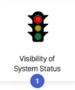
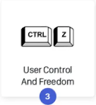
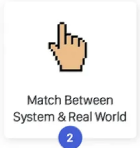
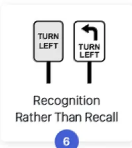

These are some of the heuristics that have interested me one that didn't come to
common knowledge. Out of the 10 there are the ones that sick out the most to me
and seem more important than others but they all are good to use while makign a
website.

This is for letting the user know where they are in the process of anything and how far they are

This is makeing sure the user can freely navigate the website and undo mistakes preventing confusion

This is for makign it easer to know what is what by repleacaing stuff from real life

This is so people can insead of remembering where everything is having clues to what is there